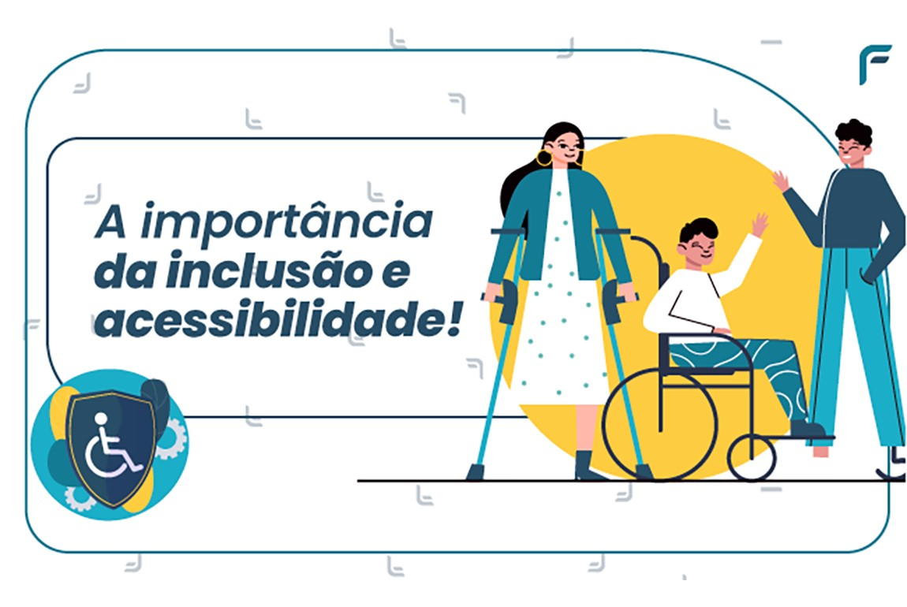

Por que Celebrar o Dia Internacional da Pessoa com Deficiência?
O Dia Internacional da Pessoa com Deficiência, celebrado em 3 de dezembro, é um momento importante para conscientizar a sociedade sobre os direitos das pessoas com deficiência e para promover a inclusão em todos os aspectos da vida. Esta data busca destacar as contribuições das pessoas com deficiência em diversas áreas, como educação, cultura, esporte e trabalho, além de reforçar a importância de eliminar barreiras físicas e sociais.
Celebrar este dia é essencial para garantir que as pessoas com deficiência tenham acesso a oportunidades iguais e possam participar ativamente da sociedade, sem discriminação ou exclusão. A conscientização sobre a acessibilidade, a igualdade de oportunidades e a valorização das diferenças são objetivos principais dessa celebração.
